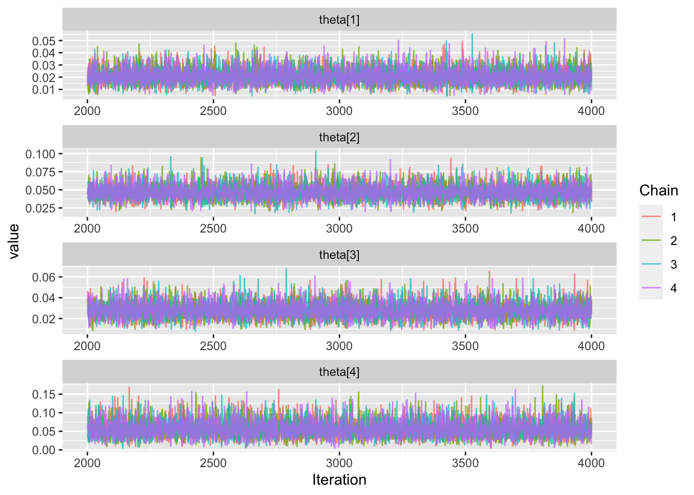
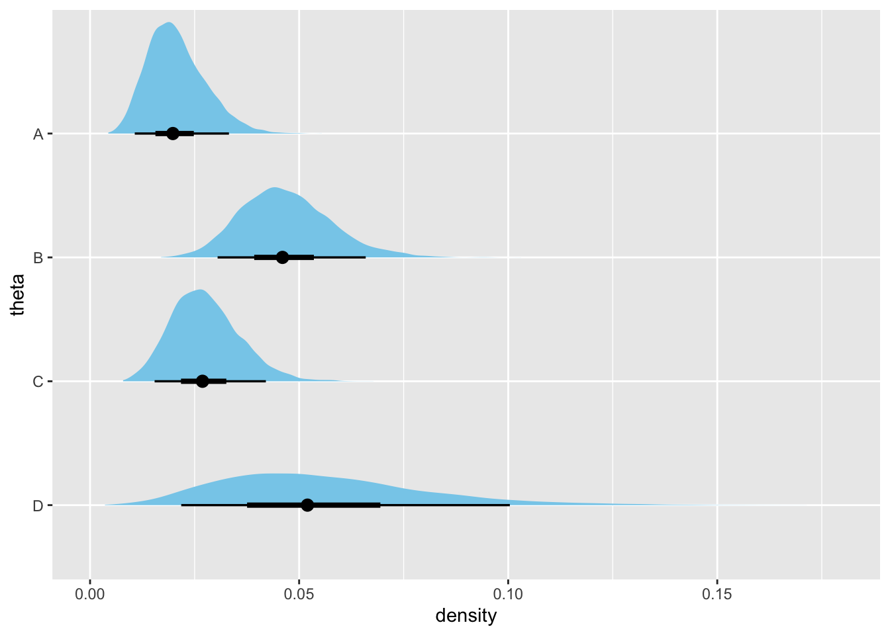

3.1 サンプルレポート
まず以下のような状況を考えよう．
- ある商品のプロモーションのためにLPを作成した
- LPのデザインパターンとして以下を作成した
- ヒーローバナーを２パターン
- ボタンの文言を２パターン
- これらのデザインをそれぞれ無作為にユーザーに表示させてデータを収集した
この実験によって得られたデータが以下のようなものだったとする．
test_results <- read_csv("dataset/chapter03/test-results.csv")## Rows: 4 Columns: 4
## ── Column specification ─────────────────────────────────────────────────────────────────────────────────────
## Delimiter: ","
## chr (1): pattern
## dbl (3): imp, click, ctr
##
## ℹ Use `spec()` to retrieve the full column specification for this data.
## ℹ Specify the column types or set `show_col_types = FALSE` to quiet this message.test_results %>%
mutate(ctr = round(ctr, 4)) %>%
knitr::kable(
caption = "LPのデザイン表示テスト結果",
label = "sample-data-chapter-03"
) %>%
kableExtra::kable_styling(full_width = FALSE)| pattern | imp | click | ctr |
|---|---|---|---|
| A | 434 | 8 | 0.0184 |
| B | 382 | 17 | 0.0445 |
| C | 394 | 10 | 0.0254 |
| D | 88 | 4 | 0.0455 |
3.1 を見るとパターンDの表示回数が少なくなっている．これは表示のロジックにバグがあったためということにしておく． 均等配信ができなかった状態で議論を進めていこう．
3.1.1 シンプルなベイズ推論
要素については一度忘れて既にやった通り表示とクリック数で二項分布を当てはめるベイズ推論を行ってみよう． つまりEquation (3.1) のようなモデルを考える．
\[\begin{align} \begin{aligned} \text{Click} \sim \text{Binomial}(Impression, \theta) \end{aligned} \tag{3.1} \end{align}\]
Stanのコードはこのようになる．
data {
int N;
int<lower=0> imp[N];
int<lower=0> click[N];
}
parameters {
real<lower=0, upper=1> theta[N] ;
}
model {
for (n in 1:N) {
click[n] ~ binomial(imp[n], theta[n]);
}
}Rの実行コードは以下のようにした．
df <- test_results
data <- list(
N = nrow(df),
imp = df$imp,
click = df$click
)
fit_simple_model <- rstan::stan(
file = model_path,
data = data,
iter = 4000,
chain = 4,
seed = 1234
)トレースプロット Figure 3.1 を確認すると，問題なく収束していることが確認できる．
ggmcmc::ggs(fit_simple_model) %>%
ggmcmc::ggs_traceplot()

Figure 3.1: thetaのMCMCのトレースプロット
次に推定された事後分布とその要約を確認しておこう．これらをTable 3.2 にまとめる．
| parameter | mean | sd | lower | upper | hid_range |
|---|---|---|---|---|---|
| theta_A | 0.021 | 0.007 | 0.008 | 0.034 | 0.026 |
| theta_B | 0.047 | 0.011 | 0.026 | 0.068 | 0.042 |
| theta_C | 0.028 | 0.008 | 0.013 | 0.044 | 0.031 |
| theta_D | 0.055 | 0.024 | 0.014 | 0.104 | 0.090 |
また，事後分布の形状をFigure 3.2 にまとめた．
fit_simple_model %>%
tidybayes::spread_draws(theta[condition]) %>%
mutate(
condition = as.factor(c("A", "B", "C", "D")[condition])
) %>%
ggplot(aes(y = fct_rev(condition), x = theta),) +
tidybayes::stat_halfeye(.width = c(.90, .5), fill = "skyblue") +
xlim(0, 0.18) +
ylab("theta") +
xlab("density")

Figure 3.2: 各パターンに対するthetaの事後分布
平均を見るとA案が最もCTRが低く，D案が最もCTRが広いがDは表示回数が少ないため事後分布の裾が広くなっている． これよりB案とD案に絞り，これらの案が他より優れているかどうかを評価してみる．
ms <- rstan::extract(fit_simple_model) %>%
purrr::pluck("theta")
tibble(
Pattern = c("A", "C"),
"B" = c(mean(ms[,2] - ms[,1] > 0), mean(ms[,2] - ms[,3] > 0)) %>% round(3),
"D" = c(mean(ms[,4] - ms[,1] > 0), mean(ms[,4] - ms[,3] > 0)) %>% round(3)
) %>%
knitr::kable(
caption = "B,D案とA,C案の比較",
label = "comparing-simple-model-bd-to-ac"
)| Pattern | B | D |
|---|---|---|
| A | 0.979 | 0.942 |
| C | 0.931 | 0.879 |
B案がA案よりも優れている割合は95%を超えているものの，D案とA案の比較では95%を若干下回っている．